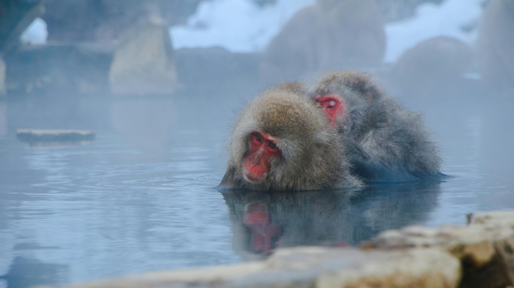
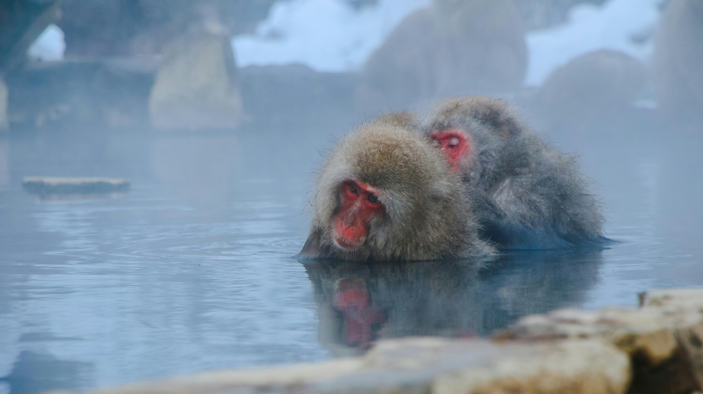
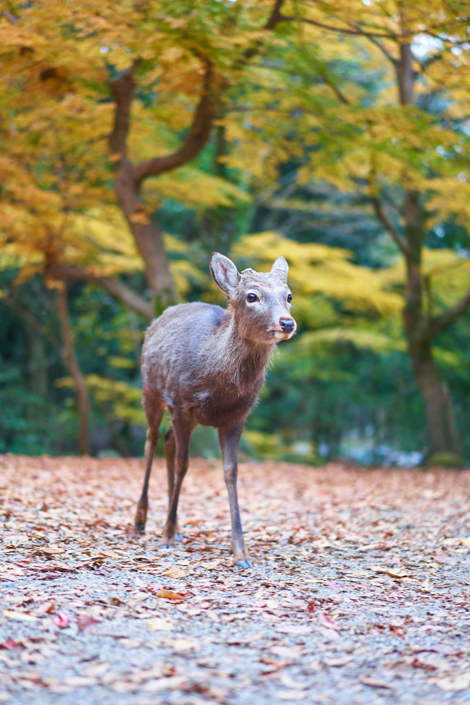
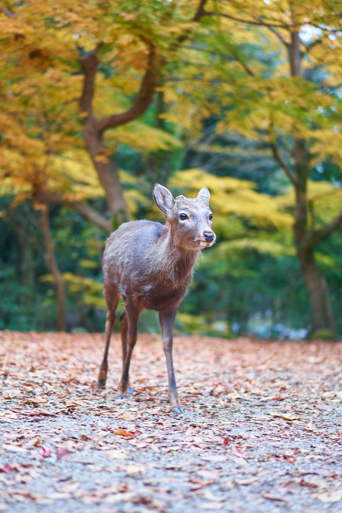

With this travel package, your adventure starts with a scenic walk through the historic town of Kyoto. The tour will begin at 8am at the Kyoto Railway Station. After the scenic walk, you will enjoy a traditional tea ceremony with some geisha.
What to Wear
In spring, light layers like a sweater or light jacket over comfortable clothing are ideal, especially for enjoying the cherry blossoms. Summer is hot and humid, so wear breathable, light fabrics like cotton, along with a hat and sunglasses to protect from the sun. Autumn brings cool and crisp air, perfect for layering; a light coat or jacket is recommended. Winter is cold, so pack a warm coat, gloves, and scarves, especially for outdoor temple visits.
Reservations
You can click on the button below or the following link to add the "Geisha, Temples & Tea in Kyoto" package to your trip planner where you can request a reservation or continue to browse for additional services. For reservations or additiona information you can also call 800-208-0200 or contact us online.
 

 
